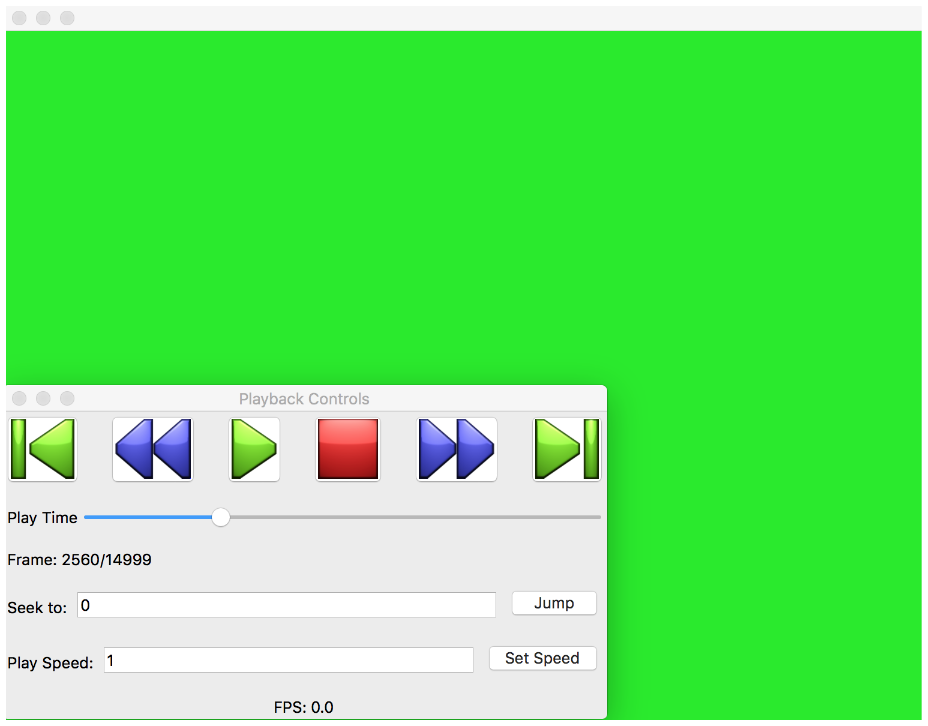
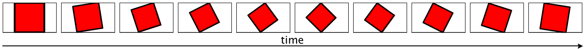
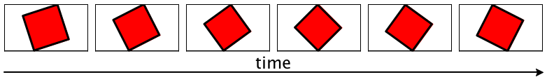
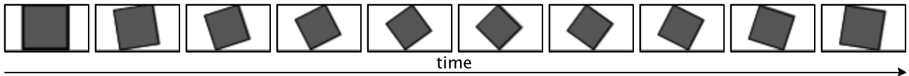
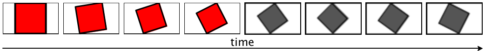
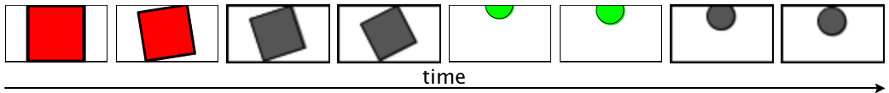

1 Getting Started
Video is a functional-declarative language for manipulating videos from many input sources: images, video files, even live streams.
The video module is a language and includes all of the bindings in racket. Users that want to use Video as an API embedded in other languages can use the video/base module instead.
1.1 Video Basics
Rather than evaluating programs for their effects, expressions in Video combine to describe a single video stream. Thus, Video allows authors to write videos in a similar fashion to how LaTeX enables authors to write documents.
All video programs begin with #lang video, the remaining program is a video description. Each top level expression is a producer, or something that produces a video stream. For example, the color producer generates a stream of green frames:
#lang video ; green.vid (color "green")
When the module above is converted into a video, the output looks something like:

This picture also shows an example of playback controls. These are shown whenever previewing a video. The easiest way to preview a video is to press the Preview Video button in the DrRacket toolbar. Note that simply running a program is not enough to render a video. Every Video programs describes a single vid data structure. Thus, a renderer (or streamer) can prepare the Video in many different formats. Additionally, Video programs can include the vid structure from other programs. Evaluating vid in DrRacket’s REPL after running the module shows the resulting structure:
> vid #<playlist>
Although the length can be set with the #:length keyword.
#lang video (clip "spinning_square.mp4")

Clips can be further cut with the #:start and #:end keywords:
#lang video (clip "spinning_square.mp4" #:start 2 #:end 8)

1.2 Filters
Filters can be attached to every producer. These filters modify the producers behavior: turning it grayscale, changing the aspect ratio, etc. The attach-filter function attaches filters to a list. For example, we can use the grayscale-filter to remove the color from the rotating square clip earlier.
#lang video (attach-filter (clip "spinning_square.mp4") (grayscale-filter))

An alternative approach would be to use the #:filters keyword associated with producers.
#lang video (clip "spinning_square.mp4" #:filters (list (grayscale-filter)))

1.3 Playlists
Video shines when combining multiple producers. The language provides two ways of combining producers, playlists and multitracks. To a first approximation, playlists run producers sequentially, while multitracks play them together.
Playlists are the simpler form, with each module being an implicit playlist.
#lang video (clip "spinning_square.mp4" #:start 0 #:end 4) (clip "spinning_square.mp4" #:start 0 #:end 4 #:filters (list (grayscale-filter)))

Playlists are themselves producers. As such, playlist can also append multiple playlists together. This example combines the playlist from above with another similar clip of a ball dropping:
#lang video square-movie ball-movie (define square-movie (playlist (clip "spinning_square.mp4" #:start 0 #:end 2) (clip "spinning_square.mp4" #:start 2 #:end 4 #:filters (list (grayscale-filter))))) (define ball-movie (playlist (clip "ball_drop.mp4" #:start 0 #:end 2) (clip "ball_drop.mp4" #:start 2 #:end 4 #:filters (list (grayscale-filter)))))

This is also true of functions created with λ/video and define/video.
1.4 Transitions
#lang video (clip "ball_drop.mp4" #:start 0 #:end 5) (fade-transition #:length 2) (clip "ball_drop.mp4" #:start 5 #:end 10 #:filters (list (grayscale-filter)))

1.5 Multitracks
#lang video (multitrack (blank #f) (composite-transition 0 0 1/2 1) (clip "spinning_square.mp4") (composite-transition 1/2 0 1/2 1) (clip "dropping_ball.mp4"))

#lang video (multitrack bg spinning-square dropping-ball #:transitions (list (composite-transition 0 0 1/2 1 #:top spinning-square #:bottom bg) (composite-transition 1/2 0 1/2 1 #:top dropping-ball #:bottom bg))) (define bg (blank #f)) (define spinning-square (clip "spinning_square.mp4")) (define dropping-ball (clip "dropping_ball.mp4"))

1.6 Command Line Interaction
The raco video tool is the most simple way to render video files. To get a list of its current set of features, run:
raco video --help
By default, raco video will open up a Video file in a preview window.